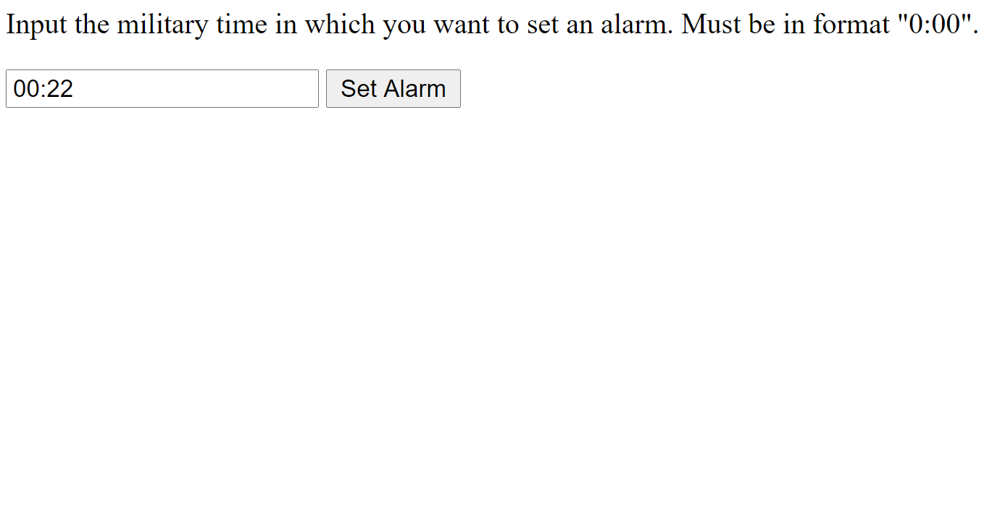
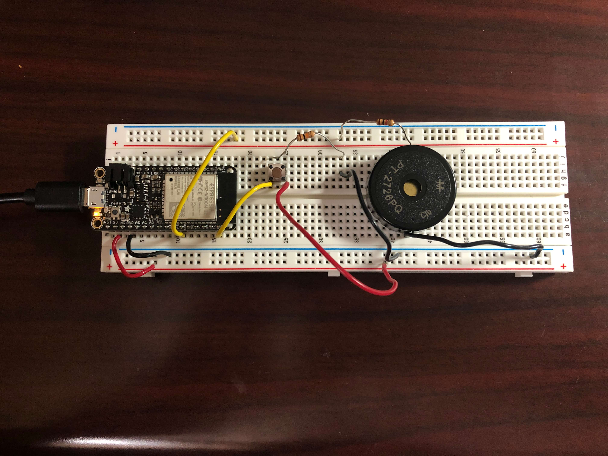

Since my final project will be an alarm clock, I will need a way to use the Huzzah as a web client and get the time from an API. I will also need a way to set alarms by making sure my Huzzah can receive instructions from an external website to know when to ring the alarm. Here's a demo of my assignment for today!
To set the alarm from a website via Firebase from anywhere with internet access, here's the link.
To start off, I followed a tutorial to get accurate date and time information from an NTP Client-Server and then added the necessary Firebase library so that I could use Firebase to control my Huzzah from a website coded in HTML. Since I live in the PST time zone, I had to offset the time given by the server by -25200 milliseconds, or -8 hours.
Since Firebase sends data in a string format to the Huzzah, I made a variable called alarmString which stored the data received from Firebase so that I would be able to compare that variable with another variable that would represent the time from the NTP Server. However, I had a lot of trouble with converting the time info from the NTP Server into a string data type, getting error after error whenever I tried to upload the sketch onto the Huzzah.
Eventually, I decided to start from scratch with a different method. Instead of just calling the NTP Client-Server, I installed the NTPClient library. This library had a function called timeClient.getFormattedTime(), which I was able to set a string called FormattedTime equal to, although the formatted time came in the format "HH:MM:SS". Since I didn't care about seconds, I used a substring to only include the relevant "HH:MM" information in the string.
FormattedTime = timeClient.getFormattedTime(); //get formatted time string in format "HH:MM:SS"
int splitT = FormattedTime.indexOf("T");
actualTime = FormattedTime.substring(splitT + 1, FormattedTime.length() - 3); //split FormattedTime string to format "HH:MM"
delay (1000);
This method allowed me to finally make a comparison between the string of data from Firebase and the string of data representing the time from the NTP server. I connected a buzzer in my circuit with a 1K resistor on pin 5 which would buzz if the two strings were equal. I used this if-statement to compare the two strings:
if (alarmString == actualTime) { // compare the alarm string from Firebase to the string representing the actual time from the NTP server
Serial.println("Alarm Turned ON");
myTone(buzzerPin, 262, 500); // sound the buzzer alarm
delay(1000);
} else { // if the strings don't match, then there will be no alarm
Serial.println("Alarm Turned OFF");
}
This finally worked! However, I soon realized that I had no way to turn off the alarm. Thus, I added a button into my circuit on pin 21 with a pull-down resistor. I modified the myTone function with an if statement which would keep the buzzer buzzing unless the button was pressed. I haven't yet gotten the button to work how I want it to. Ideally, I would want the button to turn off the buzzer after being pushed, but my code only allows for the buzzer to stop if the button is continuously pushed down, and the buzzer automatically stops once the time changes by a minute. When I actually make my final project, I will try to have this issue solved. Nevertheless, here's the code:
if (alarmString == actualTime) { // compare the alarm string from Firebase to the string representing the actual time from the NTP server
Serial.println("Alarm Turned ON");
myTone(buzzerPin, 262, 500); // sound the buzzer alarm
delay(1000);
} else { // if the strings don't match, then there will be no alarm
Serial.println("Alarm Turned OFF");
}
Although I could manually change the ALARM_TIME value in Firebase to set the alarm, I wanted to create a website where I would be able to do so. I used an input tag in HTML whose type was text so that I would be able to type something into the text box and call on it to get a string value. I haven't written code in JavaScript before, so I had to learn a few things to make a function that would take the value of that input and make it into a JavaScript variable which would update the ALARM_TIME value in Firebase. I also added an alert so that whoever sets the alarm will know that they successfully set the alarm. Here's what the website looks like:

And here's the code.
Although not perfect, I can definitely use the tools that I learned in this assignment to complete my final project! Here's the circuit diagram and the sketch:

#include // firebase library
#include
#include
#include
#define FIREBASE_HOST "https://esp32-led-4ebe6.firebaseio.com/" // the project name address from firebase id
#define FIREBASE_AUTH "PqraRQDqfQmHnCZnHkPA3vmyNYVKuphzYFbgtEwC" // the secret key generated from firebase
const char *ssid = "ssid";
const char *password = "password";
const long utcOffsetInSeconds = -28800; //offset of -8 hours since I live in PST time zone
WiFiUDP ntpUDP;
NTPClient timeClient(ntpUDP);
String formattedDate;
String FormattedTime;
String actualTime;
String alarmString = ""; // alarm time string received from firebase
int buzzerPin = 5;
int button = 21;
//Define FirebaseESP32 data object
FirebaseData firebaseData;
void setup() {
Serial.begin(115200);
pinMode(buzzerPin, OUTPUT);
pinMode(button, INPUT);
WiFi.begin(ssid, password); // try to connect with wifi
Serial.print("Connecting to ");
Serial.print(ssid);
while (WiFi.status() != WL_CONNECTED) {
Serial.print(".");
delay(500);
}
Serial.println();
Serial.print("Connected to ");
Serial.println(ssid);
Serial.print("IP Address is : ");
Serial.println(WiFi.localIP()); // print local IP address
Firebase.begin(FIREBASE_HOST, FIREBASE_AUTH); // connect to firebase
Firebase.reconnectWiFi(true);
Firebase.set(firebaseData, "/ALARM_TIME", "OFF"); // set initial string of "OFF"
timeClient.begin();
timeClient.setTimeOffset(-25200);
}
void loop() {
while (!timeClient.update()) {
timeClient.forceUpdate();
}
Firebase.get(firebaseData, "/ALARM_TIME"); // get alarm status input from firebase
alarmString = firebaseData.stringData(); // change to e.g. intData() or boolData()
Serial.println(alarmString);
FormattedTime = timeClient.getFormattedTime(); //gives current PST time in HH:MM:SS
int splitT = FormattedTime.indexOf("T");
actualTime = FormattedTime.substring(splitT + 1, FormattedTime.length() - 3); //splits current PST time string to HH:MM
delay (1000);
Serial.println (actualTime);
if (alarmString == actualTime) { // compare the input of alarm status received from firebase
Serial.println("Alarm Turned ON");
myTone(buzzerPin, 262, 500);
delay(1000);
} else { // compare the input of alarm status received from firebase
Serial.println("Alarm Turned OFF");
}
}
void myTone(int pin, int frequency, int duration) {
int buttonState = digitalRead (button);
int startTime = millis();
int period = 1000000 / frequency;
if (buttonState == LOW) { //button is not pressed, so buzzer sounds
while ((millis() - startTime) < duration) {
digitalWrite(pin, HIGH);
delayMicroseconds(period / 2);
digitalWrite(pin, LOW);
delayMicroseconds(period / 2);
}
} else {
digitalWrite(pin, LOW); //button is pressed, so buzzer stops
}
}